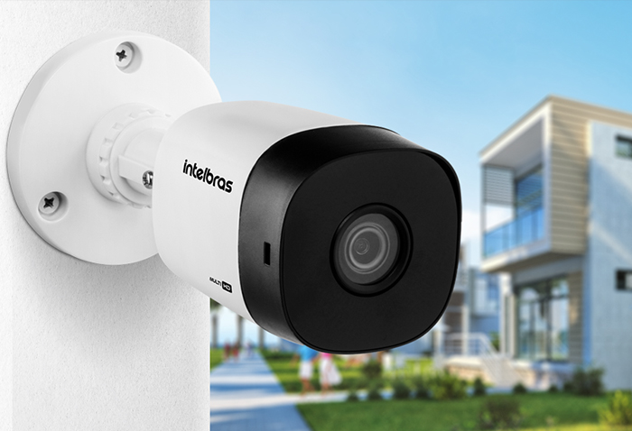

Câmeras de Segurança (CFTV)
O Circuito Fechado de Televisão (CFTV) é fundamental nas estratégias de segurança. Ele assegura o controle de acesso de pessoas, mercadorias e veículos, permitindo maior fiscalização dos procedimentos por todos que transitam na área monitorada.
Um projeto especializado possui um excelente custo-benefício, pois ajuda a prevenir assaltos e invasões. Pense no sistema de câmeras como uma proteção para seu patrimônio no presente e a longo prazo.
Lembre-se: economizar em segurança pode trazer danos irreversíveis.

Tecnologia e Acesso Remoto
A SEGURANÇA JARAGUÁ disponibiliza a mais alta tecnologia em sistema de câmeras com imagens de alta definição. Para um projeto profissional, os equipamentos são escolhidos conforme a estrutura e o estudo de vulnerabilidades do local. Desconfie de empresas que não oferecem este levantamento antes de precificar o projeto.
Disponibilizamos um sistema facilitado, onde o cliente consegue acompanhar as imagens em tempo real através de software para smartphone, tablet e computador, garantindo tranquilidade para visualizar seu patrimônio mesmo à distância.
Sistemas de Alarme

Mesmo quando o cliente não opta pelo serviço de monitoramento 24h, o proprietário pode ter total controle sobre o sistema, sendo o único a ter acesso às ocorrências do local onde o alarme está instalado.
Através de um aplicativo, é possível visualizar as câmeras (se houver) e receber notificações instantâneas quando o alarme é disparado.
Sensores Mais Comuns:
- Sensor de Barreira: Emite feixes de luz invisível. Quando interrompidos, notifica a central.
- Sensores Magnéticos: Detectam a abertura indevida de portas e janelas.
- Sensor de Impacto: Usados para proteger estruturas, detectando impactos, perfurações ou arrombamentos.
- Infravermelho (IVP): Captam a movimentação de pessoas no ambiente por meio do calor gerado pelo corpo.
Condomínios Inteligentes
Um condomínio inteligente é planejado para ser prático e seguro desde sua construção, prevendo a instalação de tecnologias que garantem mais conforto e proteção aos moradores e trabalhadores, como fibra óptica, vigilância avançada e portaria remota.
Características Principais:
- Identificação Biométrica e Facial: Libera o acesso de moradores por impressão digital ou reconhecimento facial, oferecendo mais segurança que senhas ou chaves.
- Interfones com Atendimento Remoto: Moradores podem atender chamadas do interfone pelo celular, mesmo quando não estão em casa, agilizando o atendimento.
- Porteiros Eletrônicos: Monitoramento de acesso por áudio e vídeo, permitindo acionar ajuda em emergências sem colocar funcionários em risco.
- Monitoramento Avançado: Câmeras com análise de vídeo que geram alertas automáticos para a central em caso de atividades suspeitas.
- Botão de Pânico: Uma forma discreta de solicitar ajuda da empresa de segurança em caso de emergência, podendo ser integrado ao sistema de biometria ("dedo de pânico").
Telefonia IP
A tecnologia de Telefonia IP utiliza a rede de internet para realizar chamadas, sendo uma opção estratégica para empresas que buscam reduzir custos e aumentar a qualidade da comunicação.
Benefícios da Telefonia IP:
- Redução de Custos: As ligações são feitas via internet, diminuindo drasticamente os custos com operadoras de telefonia tradicionais.
- Aproveitamento de Infraestrutura: Utiliza a mesma estrutura de cabeamento da sua rede de computadores, economizando em instalações.
- Qualidade nas Chamadas: A voz em alta definição (HD) proporciona conversas mais claras e sem ruídos.
- Mobilidade e Facilidade: Leve seu ramal para qualquer lugar. Basta conectar o aparelho de telefone IP em uma rede de internet para usá-lo, sem necessidade de reconfiguração.
Monitoramento 24 Horas
Nossa base de monitoramento 24h conta com profissionais altamente capacitados para acompanhar as ocorrências sinalizadas pelo seu sistema e tomar todas as providências com rapidez e eficiência, incluindo o acionamento do nosso suporte tático e da Polícia, se necessário.
Como Funciona:
- Monitoramento de Alarme: Utiliza centrais, sensores e sirenes conectados à nossa base por GPRS, IP ou linha telefônica para uma resposta imediata.
- Monitoramento de Câmeras: Câmeras de alta resolução (HD, Full HD e IP) que permitem à nossa equipe visualizar o local em tempo real, agilizando a verificação e a tomada de decisão.

Portaria Virtual e Presencial
Modernize a segurança e o controle de acesso do seu condomínio com soluções que se adaptam à sua necessidade, agilizando o fluxo de entrada e saída, especialmente em horários de pico.
Portaria Presencial
Garante a presença de um profissional 24 horas por dia, oferecendo segurança, conforto e suporte no recebimento de encomendas e na intermediação de contatos, com monitoramento constante das áreas comuns.
Portaria Remota (Virtual)
Funciona como uma portaria convencional, só que à distância. Nossa central gerencia a segurança, o acesso de moradores e visitantes, e monitora o condomínio 24/7, agindo em tempo real. A tecnologia inclui eclusas para controle de acesso, registro detalhado de todas as entradas e saídas e dispositivos de emergência.
Consultoria de Segurança

Nosso serviço de consultoria em segurança patrimonial tem como principal função analisar as vulnerabilidades do seu imóvel ou empresa e determinar as estratégias e mecanismos necessários para garantir sua total proteção.
Vantagens da Contratação:
- Análise de Risco: Mapeamento estratégico que identifica pontos de vulnerabilidade e sugere as soluções mais eficazes.
- Projeto Personalizado: Acesso a um plano de segurança com os equipamentos de mais alta tecnologia, como CFTV, alarmes e controle de acesso.
- Acompanhamento Completo: Suporte em todas as etapas, desde a compra dos materiais até a análise e os testes dos equipamentos.